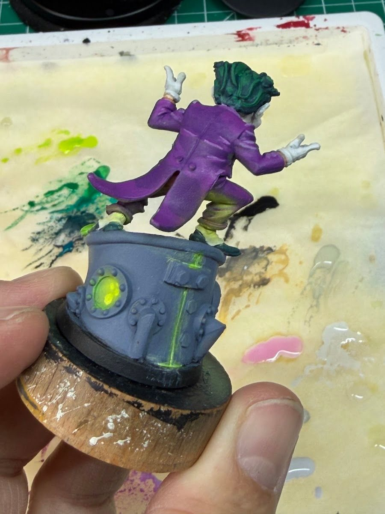

OSL (object source lighting) is painting light that comes from something in the scene: a lightsaber, a flaming skull, a glowing hand, a vat of toxic sludge. It's one of the most fun effects to try, and one of the easiest to overdo. I've had glows I was happy with, and I've had ones that were "a bit meh" (my words on Commander Shepard), so this is the version I wish I'd read first.
Why this matters
The goal isn't "add glow paint." The goal is to make the viewer believe there's a light in the scene. That depends much more on logic and value contrast than on how bright or smooth your glow is.
The short version
- The light source has to be the brightest thing on the mini.
- Only surfaces that actually face the source get lit.
- The light gets weaker with distance.
Get those three right with rough brushwork and it reads. Get them wrong with perfect blending and it doesn't.
The workflow
- Paint the source first, and make it bright. Work up to near-white at the hottest point, with the glow color around it. Fluorescents help with saturation, but they don't replace value: the core still needs to be the lightest spot.
- Find the planes that face the source. Look at the mini from the light's point of view. Which surfaces could it "see"? Only those get light. The back of an arm doesn't.
- Lay down a broad, low-intensity glow. A thin glaze of the light color over those planes. Makeup sponges or an airbrush make this soft and quick. A brush works with thin glazes.
- Tighten the brightest color close to the source. Smaller area, brighter color, right next to where the light starts.
- Stop before everything is lit. Leave shadows. The dark areas are what make the light look bright.
What I've tried
- Darth Maul: my first lightsaber. I tried makeup sponges for the lighting and some glazing on the beams, and I was pretty happy with the glow.
- Ghost Rider: the fire was wet blended (my usual approach), with a touch of airbrushed OSL to push the glow further.
- Vulture: fluorescent green layered over a white base to get an eerie glow.
- The Joker: I let the airbrush handle most of the glow creeping up his suit. Still learning to balance neon pop without going full rave, but it worked this time.
- Liara: kept the glow tight so it reads as contained energy, and kept the armor muted so the biotic sphere did the talking.
- Dazzler: pink OSL off the hand effect. It's always a balance between how much glow adds to the story and how much it starts to hide the details you worked on.

The most common mistake
Painting every nearby surface equally bright. If the chest, both arms, the base and the face are all the same glow color, there's no falloff, so there's no light. It just looks like the mini is that color. Leave the far side dark, and fade the glow as it moves away from the source.
Sponge or airbrush?
An airbrush helps a lot for soft, broad glows, but it's not required. I still use both: I like the airbrush effect more, but it's not always the most practical choice, so the makeup sponges still come out. If you're thinking about one, I wrote up how I eased into the airbrush.
Tradeoffs
- Story vs. detail. Big glows hide sculpted detail. Decide which matters more for this character.
- Tabletop vs. photo. Strong OSL reads great at the table. Subtle OSL mostly shows up in photos.
- Squads. Consistent glow on bases (like the green sludge on my Skaven) ties a team together without every mini needing a full effect.
Checklist
- Source painted first and brightest
- Only planes facing the source get light
- Broad soft glow, then tighten near the source
- Far side left dark
- Check it at arm's length
Next: a glowing base is one of the easiest OSL wins. See basing as composition.